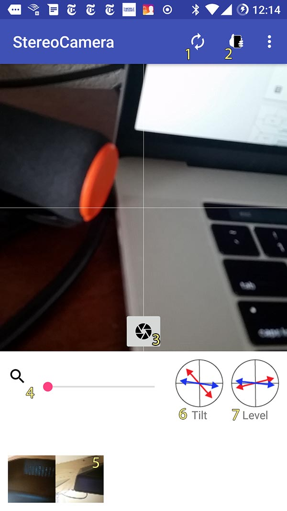

Controls
What follows is a summary of the master device controls

- Flip - toggle between the rear and front facing cameras
- Side - Specifies which side the primary device is on. Are you holding it with you left
hand or right hand? Not specifying the correct side will make your image unviewable
- Shutter - Capture a still image
- Local Zoom - Adjust the digital zoom of the camera. See the Alignment
section for more details.
- Preview - A thumbnail of the last image shot.
- Tilt - A meter displaying the current front to back tilt of both devices. Red is the primary device.
Blue is the secondary. See the Alignment
section for more details.
- Level - A meter displaying the current horizontal level of both devices. Red is the primary device.
Blue is the secondary. See the Alignment
section for more details.